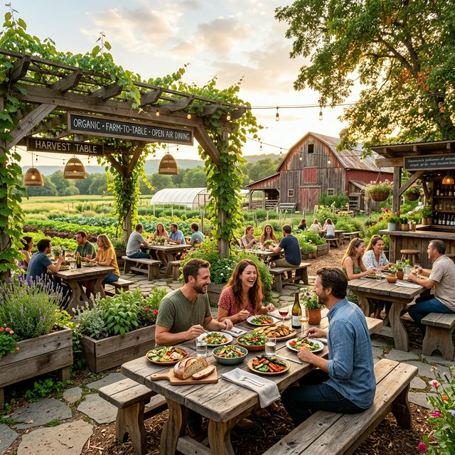
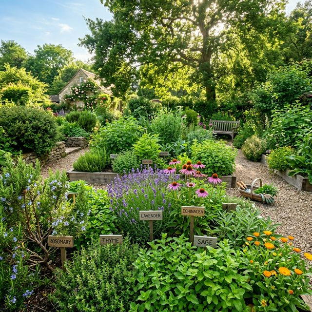
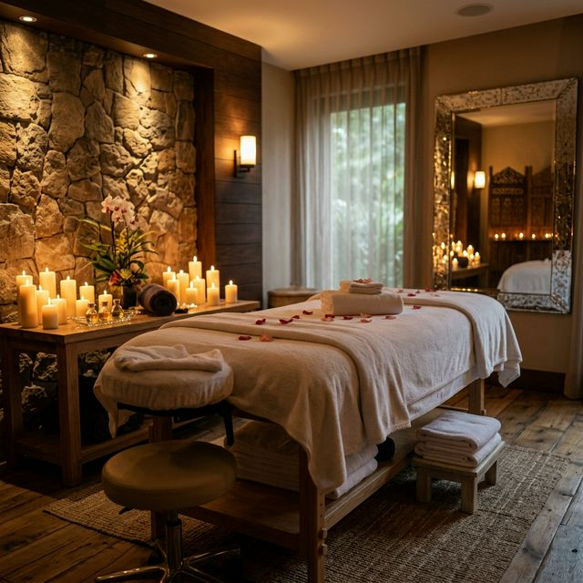
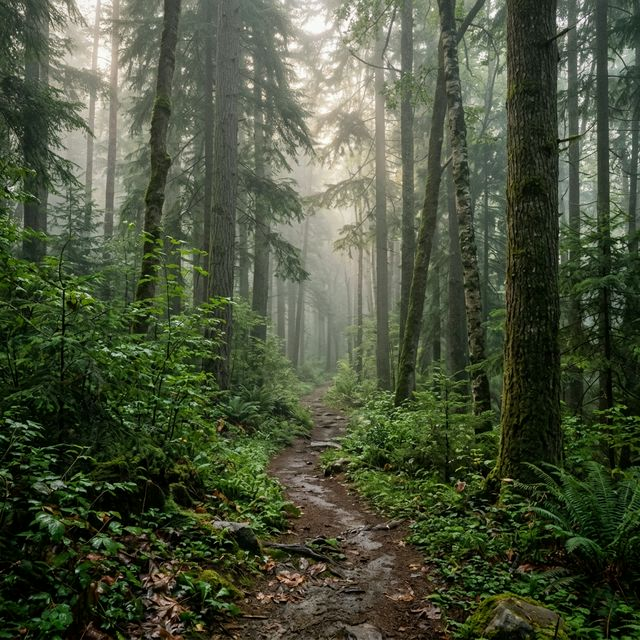
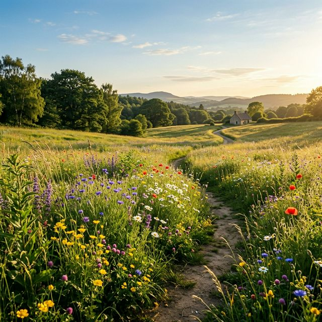

Our Facility
200 acres of old-growth forest, thoughtfully cultivated to hold your most transformative experience.

Farm-to-Table Dining
Open-air, fire-lit. All produce grown on our 5-acre organic farm. Zero processed food.

Herbal Medicine Garden
Over 80 medicinal plants. Guests are invited to harvest, learn, and prepare their own teas.

Healing Arts Center
Massage, Ayurvedic therapies, sound healing, and counseling in private treatment rooms.
Forest Trails
Three immersive walking paths through our ancient forest sanctuary.

The Ancestor Path
A gentle loop through the oldest trees. Silent walking practice amidst morning mist.

The Meadow Walk
Opens to a wildflower meadow with valley views. Perfect for morning meditation.

The Summit Trail
Ascends to a rocky outlook with a 360° panorama. Sunrise hikes every 3rd day.